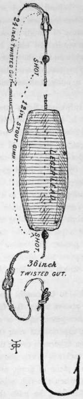
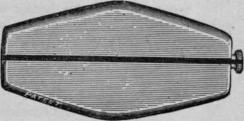
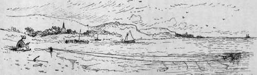

Float. Part 5
Description
This section is from the book "Sea Fishing", by John Bickerdyke. Also available from Amazon: Sea Fishing.
Float. Part 5
But it is not everybody who cares to stand on a lonely seashore, with ghostly looking waves hurrying up out of the darkness and breaking at one's feet. At Lowestoft there was a lighthouse with a red light on the right of the place where I usually fished, and on the cliff behind me a revolving light that cast moving shadows which, until I became accustomed to them, constantly gave me the impression that some evilminded person was stealing up silently behind me. I well remember, one warm night in autumn, when the sheet lightning kept flashing out from behind a great mass of clouds banked up just above the horizon. The distant sea looked black, but the undulations of the water suddenly whitened as they broke on to the beach and came rushing up to my feet, drawing back again over the sand and pebbles with a noise, half murmur, half roar.
Some distance beyond me little twinkling lights were showing along the shore—the lanterns of the men with the throw-out lines. Great dark masses glided silently by over the sea, and suddenly the revolving light, as it searched the waters, caught one of them and revealed a big ship in full sail. Then a steamer with saloon lights came by, and a lurid glare went up as her fires were coaled. After she had passed, all seemed doubly quiet and dark. The surf grew greater as the tide flowed more strongly, and it was next to impossible to keep the bait on the bottom, though I kept on increasing the weights of my leads. In the words of a passing fisher lad, ' there was a great swipe on,' and the greater the ' swipe'— which in southern English means, I suppose, surf breaking in the same direction as the strong tide which runs along the shore—the less useful the fishing.
Codling are by no means the only fish to be caught from sandy shores and beaches. There are always a few flat fish available ; and big bass, for which in such places squid is an excellent bait, often come cruising along, especially if near the mouth of an estuary. For bass some sea fishermen prefer the leger to the paternoster. This piece of tackle is clearly shown in the illustration. The lead works on a piece of gimp, and the chief peculiarity of the tackle is that when the fish seizes the bait, instead of dragging the lead after him, he pulls the line through a hole in the lead, while the angler who is holding the rod is at once notified of the bite. There is in practice very little difference between this tackle and the paternoster illustrated on p. 243, in which the lowest hook link is prolonged to a yard or more ; and as it is hardly necessary to use two kinds of tackle when one will do, I have for some time almost given up the use of the leger.
Leger For Bass, Etc.
There are times, however, when the fish appear to pick up the bait delicately and swim off with it a short distance before taking it so far into their mouths that, on the angler striking, the hook will lay hold. If any resistance is offered, as by a fixed lead, the fish drops the bait. In such cases the leger is a decided advantage, though the caution of the fish may often be overcome by simply using a smaller hook, with bait in proportion. Many bites are missed owing to the bait being too large for the hook. A very simple leger can be made by placing a leger lead, or indeed any lead of the right weight, with a hole through it on to the casting line, up which it may freely travel, its downward course being restrained by the knot fastening the line to the yard or more of snooding. A clever leger lead, invented by Mr. F. T. Williams, which can be placed on any part of the line without untying any knots, is shown in the illustration. There is an inner slotted tube which is turned after the line has been placed through both slots.
For fish which are shy and can be depended upon to pick up a bait from the bottom, there is a great advantage in a tackle which lies almost hidden amid sand and pebbles, at least that portion of it near the bait. With the ordinary paternoster, where the hook links are short, the fish has an opportunity of inspecting the gut line rising up straight from it at an angle to the bottom ; but where either the leger is used or not care to exercise any skill or take much trouble about sea fishing, sometimes use an apparatus which has various names in different localities. Mr. Wilcocks calls it an outhaul bulter — a bulter is the same gear as a trot or spiller. The form of the thing is very clearly shown by the illustrations (pp. 218 and 219).
A heavy anchor or stone is placed at low-water mark during spring tides, or it may be taken somewhat farther out to sea by means of a boat and dropped overboard. It will be noticed that attached to it is a block. Sometimes a ring is used instead of the block. Through the ring or block an endless line passes, endless inasmuch as the two ends are joined together. A number of snoodings, at least eighteen inches or two feet in length, are placed so far apart that they will not the lowest link of the paternoster is prolonged, as I have explained, the gut near the bait is practically invisible to the fish and not noticeable as it lies on the sand.
Williams's Leger Lead.
People who do entangle. Of course the size must depend on the fish you of the snoodingand of the hooks expect to catch. If big cod or bass are about, then the tackle must be strong; while for flat fish only small hooks and fine snoodings should be used. The main line must be long enough to reach to the shore above high-water mark, and by simply hauling on one side of the line the hooks can be brought in, any fish caught removed, and the hooks re baited ; then by hauling on the other side of the line the baited portion can be taken out to sea again.

Continue to:
- prev: Float. Part 4
- Table of Contents
- next: Float. Part 6
Tags
fishing, hooks, bait, fishermen, spanish mackerel, mackerel fishing